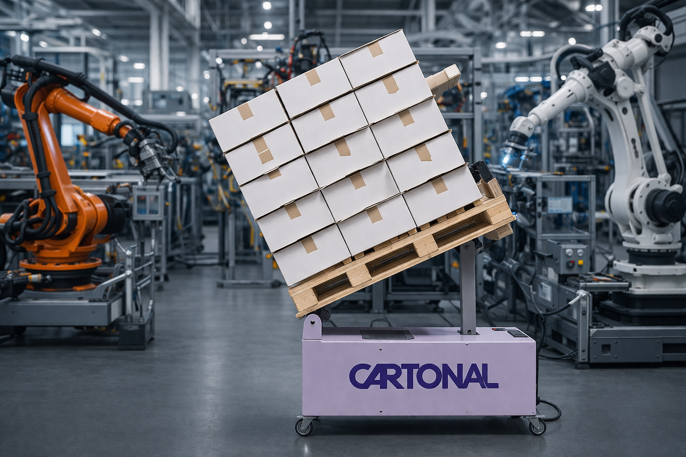

Produktbereich
Aus Frischfasern hergestelltes Papier für die Verpackung von Lebensmitteln ist die bevorzugte Wahl für Premium-Produkte aller Art. Lassen Sie sich inspirieren.


Durch den Einsatz intelligenter und moderner Plattformtechnologie hat Brigl & Bergmeister eine breite Palette von Mehrzweckpapieren entwickelt, die sich durch höchste Effizienz kennzeichnet und besonders gut für den Flexodruck geeignet sind. Mehr Details finden Sie hier oder fragen Sie uns!

Wir sind stolz auch die Etikettenpapiere von Brigl & Bergmeister in der Schweiz vertreiben zu dürfen – eine Übersicht über die Produktepalette finden Sie hier.
Für weitere Auskünfte freuen wir uns von Ihnen zu hören!

Kraftpapier naturbraun ungebleicht für Brotbeutel, Obstsack und alle Verpackungen, die wahre Nachhaltigkeit kommunizieren. Kraftpapier weiss gebleicht wird für die Herstellung von Zucker- und Mehlbeuteln verwendet.
Seit dem Verbot von Kunststoff-Beuteln im Supermarkt in diversen europäischen Ländern, sind Einkaufstaschen aus Kraftpapier eine optisch ansprechende und ökologische Alternative zu Plastikbeuteln.

Pergamin – ein natürlich fettdichtes und leicht transparentes Papier zur Verpackung von Lebensmitteln wie Schokolade oder Backwaren. Kombiniert die Atmungsaktivität von Papier mit den geruchsneutralen Eigenschaften einer Folie. Lieferbar auch mit Slip-Easy Beschichtung für Pralinen-Kapseln.
Fettdichtes Papier, klassisch auch als Pergamentersatz bezeichnet, besteht aus 100% Zellstoff. Die Papierindustrie arbeitet an neuen Barrieren, die Kunststoff-Folien ersetzen werden.

Papierkissen, auch Polsterkissen oder Pralinenpolster genannt, werden hauptsächlich für das Verpacken von liebevoll produzierter und hochwertiger Schokolade eingesetzt. Transportschutz und Marketing gehen Hand in Hand.
Wir liefern in 3–9 Lagen in weiss, braun oder schwarz. Endlos produziert, auf Mass geschnitten oder gestanzt. Mit Inhouse Flexodruck setzen wir Ihr Logo in Szene. Fragen Sie uns!

Feinwelle, aus zwei Lagen Kraftpapier hergestellter Wellkarton, für die hochwertige Verpackung von Biscuits und schlagempfindlichen Lebensmitteln. Mit und ohne Fettdichte, in Rolle oder Zuschnitten – wir haben das passende Produkt für Sie!
Backformen Bake-Well® – Beste Backeigenschaften, exzellenter Transportschutz direkt in der ansprechenden Verpackung für den POS. Für Kuchen, Brot oder Feingebäck — aus dem Haus PilloPak. Geeignet für Backofen und Mikrowelle.

Gestrichener Triplexkarton GT2 für ansprechende Verkaufsverpackungen — vielfarbig bedruckbar, prägbar, stanzbar. Lieferbar mit Migrationsbarriere, Fettbarriere, PE-Beschichtung, 2-seitig gestrichen.
Ungestrichener Triplexkarton UT2: weiss gedeckt, matter Oberfläche — verhindert Verschmieren bei Inkjet-Strichcodes.

Die hochwertig bedruckbare Oberfläche des gestrichenen Duplexkartons und die graue Rückseite sind die ökonomische Variante für preissensitive Verpackungen. Auch lieferbar mit PE-Beschichtung, gelblicher Rückseite und Wasserdampfsperre. Für mehr Informationen, fragen Sie uns!

Graukarton – aus 100% Altpapier gefertigt – wird von Industrie und Gewerbe als Sekundärverpackung für Versand- und Schutzfunktionen eingesetzt. Cartonal AG liefert das gesamte Flächengewichtsspektrum in Rollen und Bogen. Sonderformat, rau, geglättet oder beschichtet? Wir liefern es!

Antirutschkarton – für die Ladungssicherung – mit ein- oder zweiseitiger Beschichtung, meist bräunlich aber auch beige. Antirutschbeschichtete Oberflächen sind auch für direkten Lebensmittelkontakt verfügbar.
Nicht fündig geworden?
Fragen Sie uns!